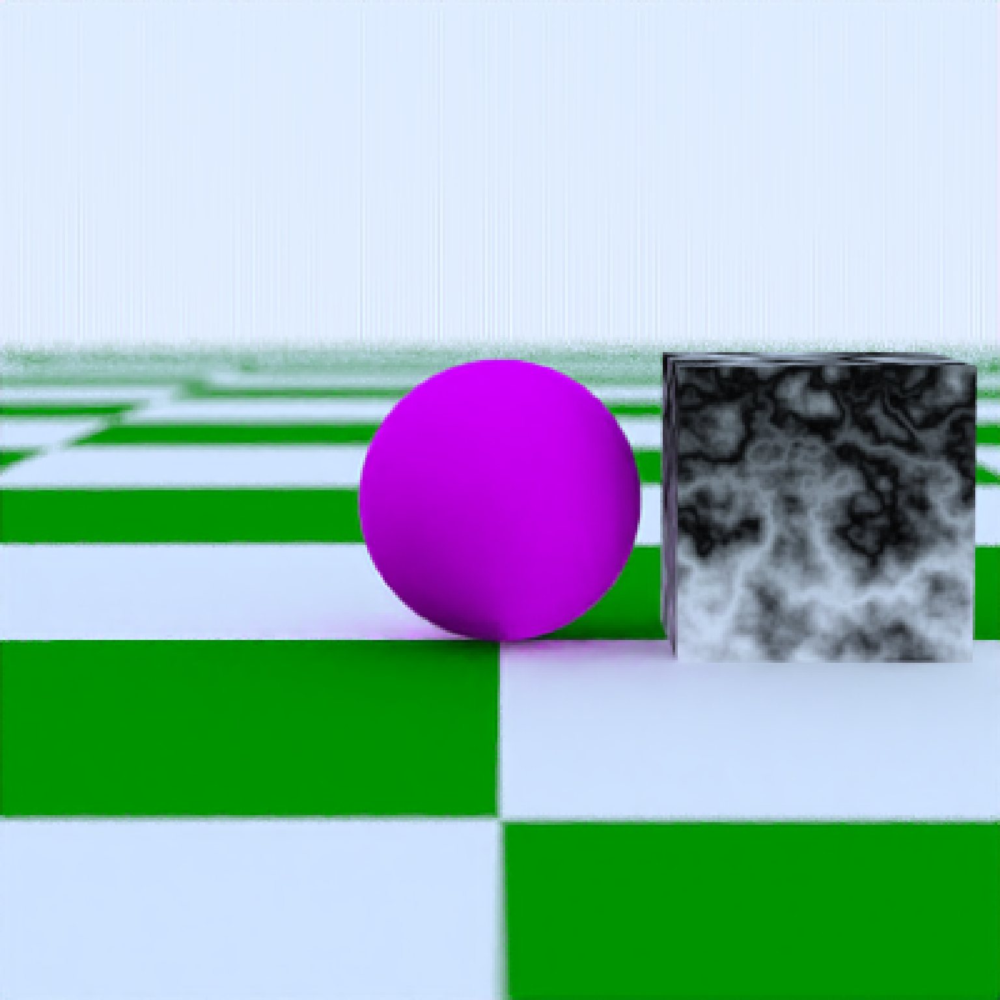
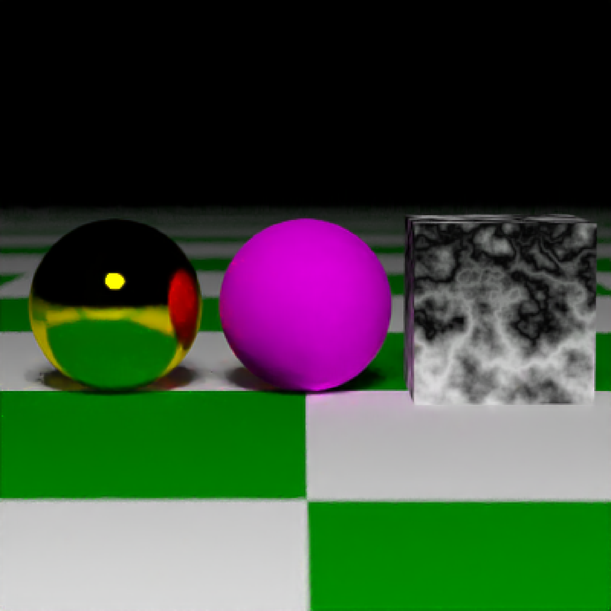
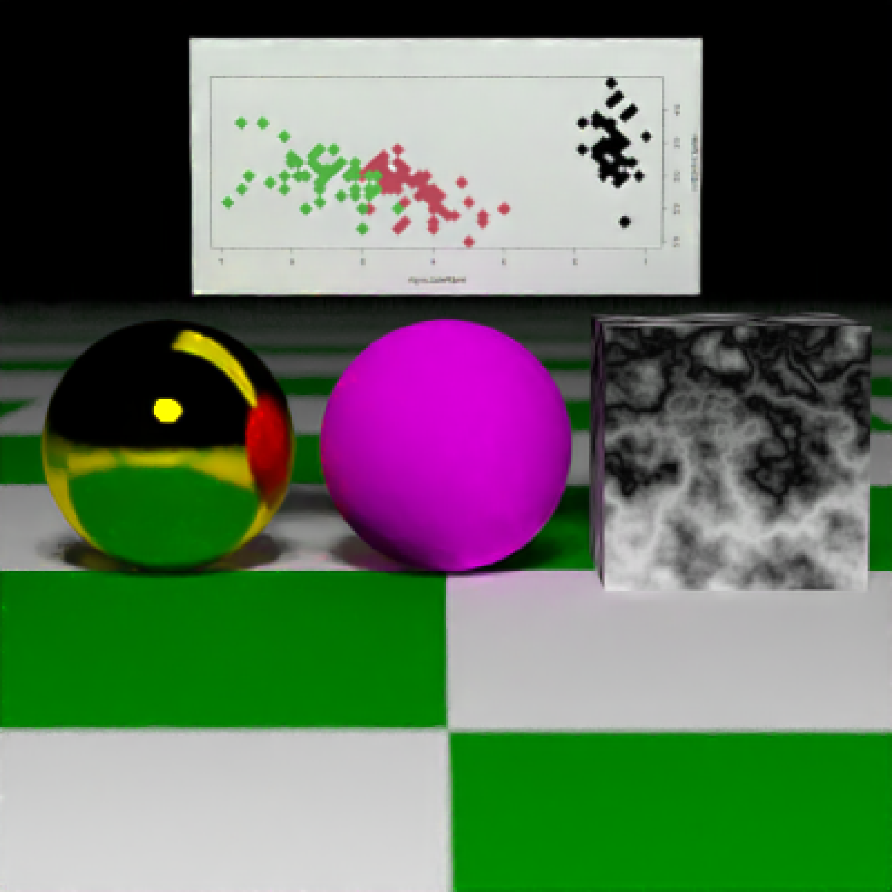
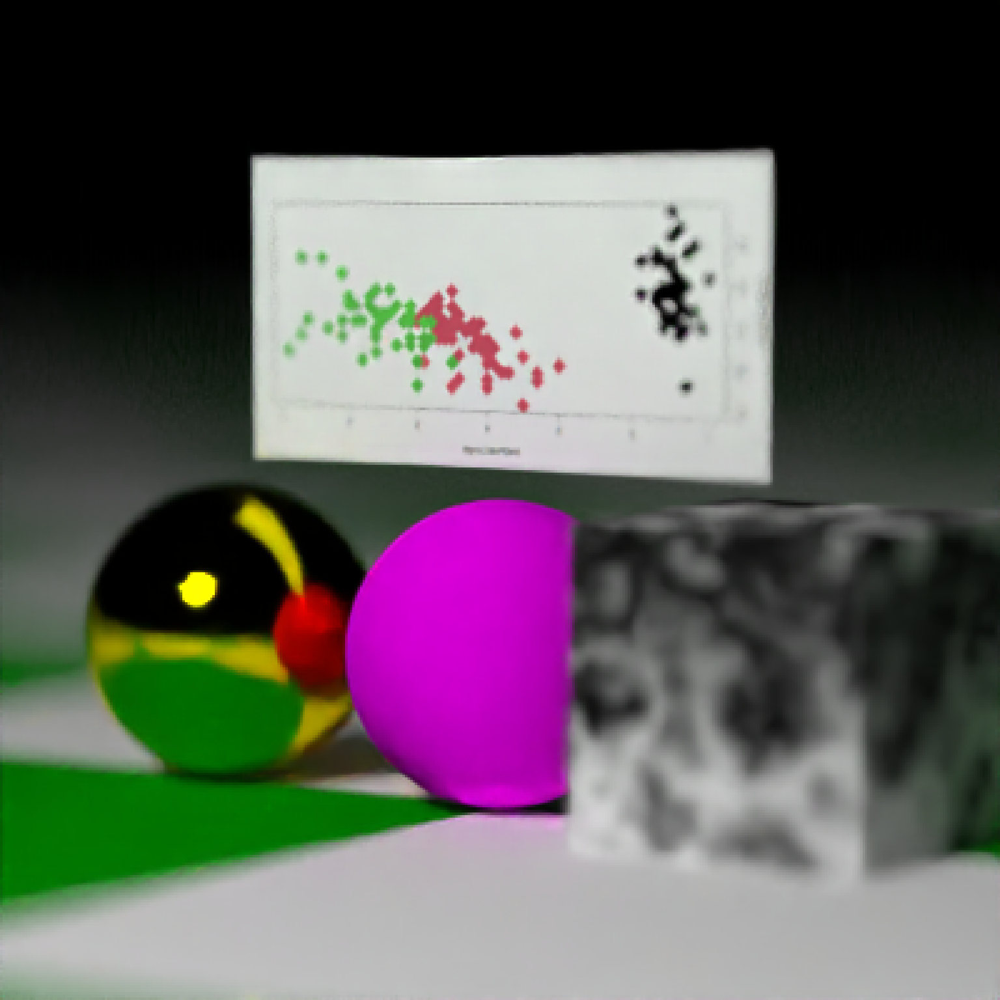
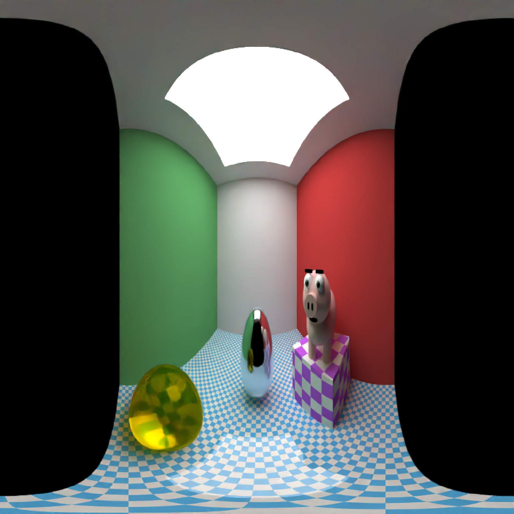

Takes the scene description and renders an image, either to the device or to a filename.
render_scene( scene, width = 400, height = 400, fov = 20, samples = 100, min_variance = 5e-05, min_adaptive_size = 8, sample_method = "random", max_depth = 50, roulette_active_depth = 10, ambient_light = FALSE, lookfrom = c(0, 1, 10), lookat = c(0, 0, 0), camera_up = c(0, 1, 0), aperture = 0.1, clamp_value = Inf, filename = NULL, backgroundhigh = "#80b4ff", backgroundlow = "#ffffff", shutteropen = 0, shutterclose = 1, focal_distance = NULL, ortho_dimensions = c(1, 1), tonemap = "gamma", bloom = TRUE, parallel = TRUE, environment_light = NULL, rotate_env = 0, intensity_env = 1, debug_channel = "none", return_raw_array = FALSE, progress = interactive(), verbose = FALSE )
Arguments
| scene | Tibble of object locations and properties. |
|---|---|
| width | Default `400`. Width of the render, in pixels. |
| height | Default `400`. Height of the render, in pixels. |
| fov | Default `20`. Field of view, in degrees. If this is zero, the camera will use an orthographic projection. The size of the plane used to create the orthographic projection is given in argument `ortho_dimensions`. |
| samples | Default `100`. The maximum number of samples for each pixel. If this is a length-2 vector and the `sample_method` is `stratified`, this will control the number of strata in each dimension. The total number of samples in this case will be the product of the two numbers. |
| min_variance | Default `0.00005`. Minimum acceptable variance for a block of pixels for the adaptive sampler. Smaller numbers give higher quality images, at the expense of longer rendering times. If this is set to zero, the adaptive sampler will be turned off and the renderer will use the maximum number of samples everywhere. |
| min_adaptive_size | Default `8`. Width of the minimum block size in the adaptive sampler. |
| sample_method | Default `random`. The type of sampling method used to generate random numbers. The other option is `stratified`, which can improve the render quality (at the cost of increased time allocating the random samples). |
| max_depth | Default `50`. Maximum number of bounces a ray can make in a scene. |
| roulette_active_depth | Default `10`. Number of ray bounces until a ray can stop bouncing via Russian roulette. |
| ambient_light | Default `FALSE`, unless there are no emitting objects in the scene. If `TRUE`, the background will be a gradient varying from `backgroundhigh` directly up (+y) to `backgroundlow` directly down (-y). |
| lookfrom | Default `c(0,1,10)`. Location of the camera. |
| lookat | Default `c(0,0,0)`. Location where the camera is pointed. |
| camera_up | Default `c(0,1,0)`. Vector indicating the "up" position of the camera. |
| aperture | Default `0.1`. Aperture of the camera. Smaller numbers will increase depth of field, causing less blurring in areas not in focus. |
| clamp_value | Default `Inf`. If a bright light or a reflective material is in the scene, occasionally there will be bright spots that will not go away even with a large number of samples. These can be removed (at the cost of slightly darkening the image) by setting this to a small number greater than 1. |
| filename | Default `NULL`. If present, the renderer will write to the filename instead of the current device. |
| backgroundhigh | Default `#80b4ff`. The "high" color in the background gradient. Can be either a hexadecimal code, or a numeric rgb vector listing three intensities between `0` and `1`. |
| backgroundlow | Default `#ffffff`. The "low" color in the background gradient. Can be either a hexadecimal code, or a numeric rgb vector listing three intensities between `0` and `1`. |
| shutteropen | Default `0`. Time at which the shutter is open. Only affects moving objects. |
| shutterclose | Default `1`. Time at which the shutter is open. Only affects moving objects. |
| focal_distance | Default `NULL`, automatically set to the `lookfrom-lookat` distance unless otherwise specified. |
| ortho_dimensions | Default `c(1,1)`. Width and height of the orthographic camera. Will only be used if `fov = 0`. |
| tonemap | Default `gamma`. Choose the tone mapping function, Default `gamma` solely adjusts for gamma and clamps values greater than 1 to 1. `reinhold` scales values by their individual color channels `color/(1+color)` and then performs the gamma adjustment. `uncharted` uses the mapping developed for Uncharted 2 by John Hable. `hbd` uses an optimized formula by Jim Hejl and Richard Burgess-Dawson. Note: If set to anything other than `gamma`, objects with material `light()` may not be anti-aliased. If `raw`, the raw array of HDR values will be returned, rather than an image or a plot. |
| bloom | Default `TRUE`. Set to `FALSE` to get the raw, pathtraced image. Otherwise, this performs a convolution of the HDR image of the scene with a sharp, long-tailed exponential kernel, which does not visibly affect dimly pixels, but does result in emitters light slightly bleeding into adjacent pixels. This provides an antialiasing effect for lights, even when tonemapping the image. Pass in a matrix to specify the convolution kernel manually, or a positive number to control the intensity of the bloom (higher number = more bloom). |
| parallel | Default `FALSE`. If `TRUE`, it will use all available cores to render the image (or the number specified in `options("cores")` if that option is not `NULL`). |
| environment_light | Default `NULL`. An image to be used for the background for rays that escape the scene. Supports both HDR (`.hdr`) and low-dynamic range (`.png`, `.jpg`) images. |
| rotate_env | Default `0`. The number of degrees to rotate the environment map around the scene. |
| intensity_env | Default `1`. The amount to increase the intensity of the environment lighting. Useful if using a LDR (JPEG or PNG) image as an environment map. |
| debug_channel | Default `none`. If `depth`, function will return a depth map of rays into the scene instead of an image. If `normals`, function will return an image of scene normals, mapped from 0 to 1. If `uv`, function will return an image of the uv coords. If `variance`, function will return an image showing the number of samples needed to take for each block to converge. If `dpdu` or `dpdv`, function will return an image showing the differential `u` and `u` coordinates. If `color`, function will return the raw albedo values (with white for `metal` and `dielectric` materials). |
| return_raw_array | Default `FALSE`. If `TRUE`, function will return raw array with RGB intensity information. |
| progress | Default `TRUE` if interactive session, `FALSE` otherwise. |
| verbose | Default `FALSE`. Prints information and timing information about scene construction and raytracing progress. |
Value
Raytraced plot to current device, or an image saved to a file.
Examples
#Generate a large checkered sphere as the ground # \donttest{ scene = generate_ground(depth=-0.5, material = diffuse(color="white", checkercolor="darkgreen")) render_scene(scene,parallel=TRUE,samples=500)# } #Add a sphere to the center # \donttest{ scene = scene %>% add_object(sphere(x=0,y=0,z=0,radius=0.5,material = diffuse(color=c(1,0,1)))) render_scene(scene,fov=20,parallel=TRUE,samples=500)# } #Add a marbled cube # \donttest{ scene = scene %>% add_object(cube(x=1.1,y=0,z=0,material = diffuse(noise=3))) render_scene(scene,fov=20,parallel=TRUE,samples=500)# } #Add a metallic gold sphere, using stratified sampling for a higher quality render # \donttest{ scene = scene %>% add_object(sphere(x=-1.1,y=0,z=0,radius=0.5,material = metal(color="gold",fuzz=0.1))) render_scene(scene,fov=20,parallel=TRUE,samples=500, sample_method = "stratified")# } #Lower the number of samples to render more quickly (here, we also use only one core). # \donttest{ render_scene(scene, samples=4)# } #Add a floating R plot using the iris dataset as a png onto a floating 2D rectangle # \donttest{ tempfileplot = tempfile() png(filename=tempfileplot,height=400,width=800) plot(iris$Petal.Length,iris$Sepal.Width,col=iris$Species,pch=18,cex=4) dev.off()#> pdf #> 2image_array = aperm(png::readPNG(tempfileplot),c(2,1,3)) scene = scene %>% add_object(xy_rect(x=0,y=1.1,z=0,xwidth=2,angle = c(0,180,0), material = diffuse(image_texture = image_array))) render_scene(scene,fov=20,parallel=TRUE,samples=500)# } #Move the camera # \donttest{ render_scene(scene,lookfrom = c(7,1.5,10),lookat = c(0,0.5,0),fov=15,parallel=TRUE)# } #Change the background gradient to a night time ambiance # \donttest{ render_scene(scene,lookfrom = c(7,1.5,10),lookat = c(0,0.5,0),fov=15, backgroundhigh = "#282375", backgroundlow = "#7e77ea", parallel=TRUE, samples=500)# } #Increase the aperture to blur objects that are further from the focal plane. # \donttest{ render_scene(scene,lookfrom = c(7,1.5,10),lookat = c(0,0.5,0),fov=15, aperture = 0.5,parallel=TRUE,samples=500)# } #Spin the camera around the scene, decreasing the number of samples to render faster. To make #an animation, specify the a filename in `render_scene` for each frame and use the `av` package #or ffmpeg to combine them all into a movie. t=1:30 xpos = 10 * sin(t*12*pi/180+pi/2) zpos = 10 * cos(t*12*pi/180+pi/2) # \donttest{ #Save old par() settings old.par = par(no.readonly = TRUE) on.exit(par(old.par)) par(mfrow=c(5,6)) for(i in 1:30) { render_scene(scene, samples=16, lookfrom = c(xpos[i],1.5,zpos[i]),lookat = c(0,0.5,0), parallel=TRUE) }# }